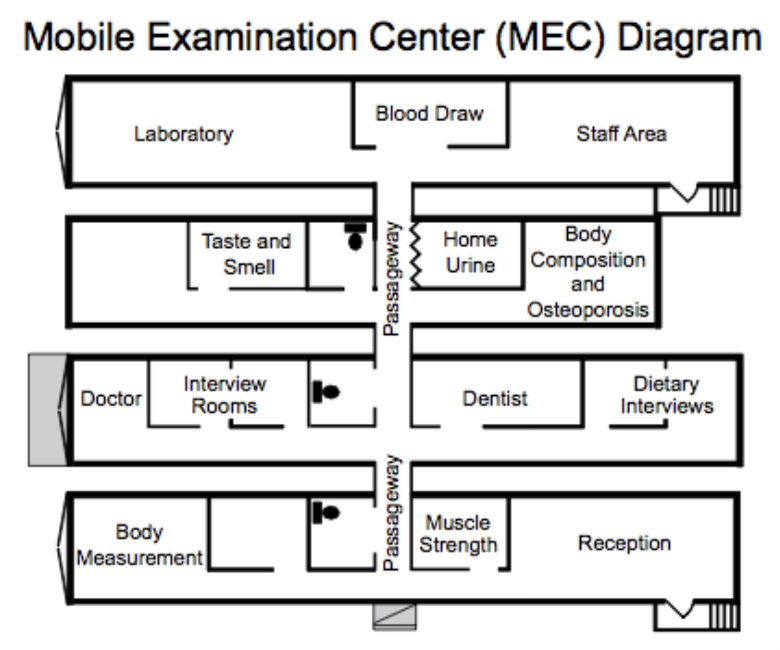

library(haven)
library(survey)
library(sf)
library(tigris)
library(tidyverse)
options(survey.lonely.psu="adjust")
brfss <- haven::read_xpt("data/LLCP2024.XPT") |>
janitor::clean_names() |>
mutate(
asthma = case_when(
asthma3 == 1 ~ 1,
asthma3 == 2 ~ 0,
.default = NA
),
statefp = as.character(ifelse(
nchar(state) == 1, paste0("0", state), as.character(state)
))) |>
filter(state <= 56)
brfss_dsn <- survey::svydesign(
id = ~1,
strata = ~ststr,
weights = ~llcpwt,
data = brfss
)
asthma_by_state <- survey::svyby(
~asthma,
~statefp,
design = brfss_dsn,
FUN = survey::svymean,
na.rm = TRUE
)
states <- tigris::states(cb = TRUE, resolution = "20m")
states_data <- states |>
filter(!STATEFP %in% c("02", "15", "60", "66", "69", "72", "78")) |>
inner_join(asthma_by_state, by = c("STATEFP" = "statefp"))
state_plot <- ggplot(states_data) +
geom_sf(aes(fill = asthma), color = "white") +
scale_fill_gradient(low = "lightblue", high = "darkred",
labels = scales::percent_format(accuracy = 1),
name = "Asthma\nPrevalence (%)") +
labs(title = "Asthma Prevalence by State", subtitle = "Survey-weighted 2024 BRFSS data") +
theme_void() +
theme(
plot.title = element_text(hjust = 0.5, face = "bold"),
plot.subtitle = element_text(hjust = 0.5, color = "gray40")
)Epidemiology
October 23, 2025
Hello!

- Econ undergrad
Hello!

- Econ undergrad
- Epidemiology masters and PhD
- Liver cancer incidence trends, survey development, EHR-linked biobanks, COVID-19 tracking
- Penn postdoc with Marylyn Ritchie (Genetics) and Yong Chen (DBEI) looking at GLP-1 RAs
What is epidemiology?

A Broad definition
Epidemiology is the study of how diseases and health-related events are distributed in populations and the factors that influence or determine this distribution1
- Modern epidemiology often described as starting with John Snow’s studies of a cholera epidemic in London in 1854
| Type | Description |
|---|---|
| Descriptive | Focuses on describing the frequency, pattern, and distribution of diseases in a population |
| Analytic | Aims to identify the factors that contribute to disease occurrence |
| Experimental | Involves actively manipulating exposure factors to study their effects |
American Community Survey (ACS)
- The US Census Bureau gathers data continuously to estimate regional socioeconomic and housing characteristics
- Data is released in aggregated 1-, 3-, and 5-year products
- Information collected helps determine how more than $675 billion in federal and state funds are distributed each year

American Community Survey (ACS)


ACS is used by many people

Behavioral Risk Factor Surveillance System (BRFSS)

- Ongoing CDC-led phone survey to collect risk behavior assoicated with premature morbidity and mortality among US adults
- Started in 1984 with 15 states
- Nationwide in 1993
- Cellphone interviews included starting in 2011
- State health departments collect state information and send to CDC
- Includes 50 states, DC, Puerto Rico, US Virgin Islands, Guam, American Samoa, Palau
- Completes ~400,000 interviews each year
Binge drinking among adults 2011
 Defined as 5 or more drinks on an occasion for men, 4 for women
Defined as 5 or more drinks on an occasion for men, 4 for women
National Health and Nutrition Examination Survey (NHANES)

- CDC study to assess health and nutritional status of adults and children in the US
- Started in 1960
- Since 1999, continuously examines 5,000 persons/year in 2-year waves
- 15 counties remain same, others change each year
- Sets national standards (e.g. height, weight, blood pressure)
- Questionnaires completed via in-person home interviews and measures taken during physical exam
- Some exposures measured via additional monitors
- Oversamples groups of particular public health interest - racial/ethnic minorities, youth, and elderly - to ensure sufficient data in these subgroups
NHANES Sampling Procedure

After data collection, weights are modified for non-response and then trimmed (reduce impact of any extreme weight values) and calibrated (ensuring weighted estimates align with population totals, accounting for over/undersampling)
NHANES health measures
- Obtained by team (physician, dentist, medical and health technicians, dietary and health interviewers)


All of Us Research Program

- Goal is to advance precision medicine - “right treatment, right patient, right time”
- NIH-led effort to gather data from 1 million or more people living in the US
- Initial areas of focus
- Pharmacogenomics
- Identify treatment/prevention targets
- Use and test mobile health
Research Using All of Us
PheWAS

GWAS

Other topics
- Pharmacogenomics (Example: Haddad et al. (2024); Discussion: Empey et al. (2025))
- Integrated risk prediction (Example: Salvatore et al. (2025)
- Equity and fairness (Examples: Mersha, Correa-Agudelo & Gautam (2025), Jurado Vélez et al. (2025))
Global Biobank Meta-Analysis Initiative